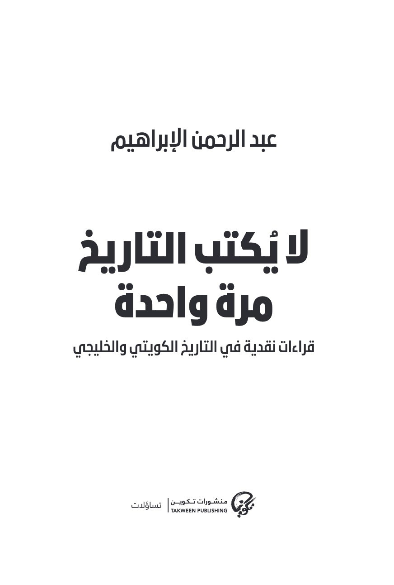
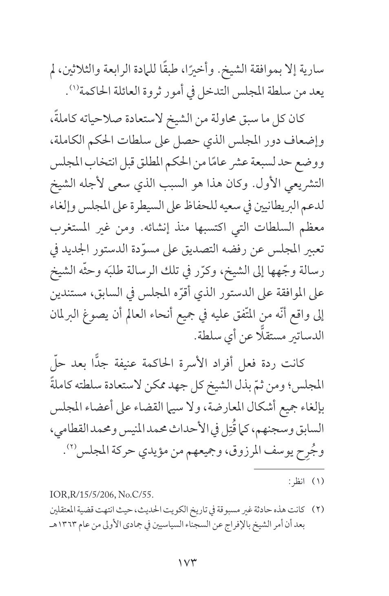

The Legislative Council of 1938 and 1939 · Book pages, Abdulrahman Al-Ibrahim, La Yuktab Al-Tarikh Marra Wahida: Qira'at Naqdiya fil-Tarikh Al-Kuwaiti wal-Khaliji, Takween Publishing, pages 173, 191 and 192
Abdulrahman Al-Ibrahim, La Yuktab Al-Tarikh Marra Wahida: Mohammed Al-Qatami and the 1938 Majlis
What it is
1. Page 173, on the dissolution of the Legislative Council: after it, the ruler tried to end all opposition, «as Mohammed Al-Munais and Mohammed Al-Qatami were killed in the events, and Yousef Al-Marzouq was wounded, all of them supporters of the Majlis movement». 2. Pages 191 and 192, on the young men of the National Bloc who volunteered to work with the Majlis: Al-Adsani and Al-Hatem record that Ghanim Al-Saqr headed the police, «and that the port administration was the responsibility of Mohammed Al-Qatami, and Ahmed Al-Bishr Al-Roumi took the post of customs officer», citing Al-Hatem, Min Huna Bada'at Al-Kuwait, page 170.
Why it matters
A recent critical history that names Mohammed Abdulaziz Al-Qatami as head of the port under the 1938 Majlis and among its supporters killed after it was dissolved.
Who is meant
The Mohammed Al-Qatami of the 1938 Majlis is Mohammed Abdulaziz Al-Qatami, who was shot in the events that followed.
Page copies


Notes
Only the first pages are shown here. Family members who sign in can see all 4 pages.
Sources
Abdulrahman Al-Ibrahim, La Yuktab Al-Tarikh Marra Wahida: Qira'at Naqdiya fil-Tarikh Al-Kuwaiti wal-Khaliji, Takween Publishing (Tasa'ulat series), pages 173, 191 and 192
How this text was made: Page 174 does not name the family, so it is not shown. The year of publication is not on the pages sent.
Open in the interactive site